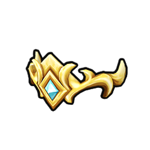
Couronne du souverain
+3 défense
Relique royale
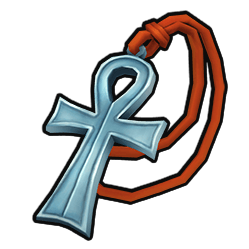
Sceau du commandement royal
+2 commandement
Relique royale

Armure du dernier rempart
+5 défense
Relique royale

Lame du serment brisé
+6 attaque
Relique royale

Égide de la capitale
+4 défense
Relique royale
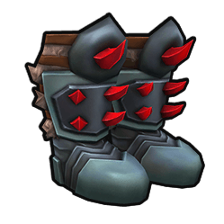
Solerets de marche royale
+2 mobilité
Relique royale
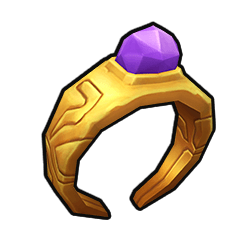
Anneau du maréchal
+3 moral
Relique royale

Insigne du conquérant
+2 attaque, +1 commandement
Relique royale

Épée de fer
+2 attaque
Guerrier · Éclaireur

Épée d’acier
+4 attaque
Guerrier · Éclaireur

Bouclier rond
+2 défense
Guerrier · Éclaireur
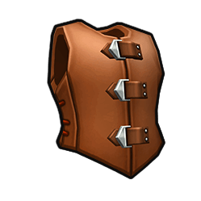
Armure de cuir
+1 défense, +1 mobilité
Guerrier · Éclaireur

Capuche d'éclaireur
+1 mobilité
Éclaireur
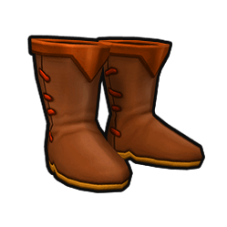
Bottes de marche
+2 mobilité
Guerrier · Éclaireur · Mage

Amulette de commandement
+1 commandement, +1 moral
Guerrier · Éclaireur · Mage
Anneau de chance
+1 moral
Guerrier · Éclaireur · Mage

Dague du pisteur
+2 attaque, +1 mobilité
Éclaireur
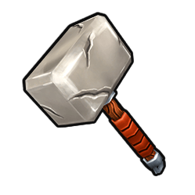
Marteau du capitaine
+3 attaque, +1 commandement
Guerrier

Lame du porte-étendard
+4 attaque, +1 moral
Guerrier
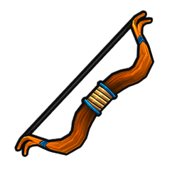
Arc de chasse
+2 attaque
Guerrier · Éclaireur
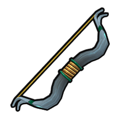
Arc de reconnaissance
+2 attaque, +1 mobilité
Éclaireur

Arbalète de guerre
+4 attaque
Guerrier · Éclaireur
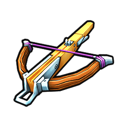
Arbalète du guetteur
+3 attaque, +1 défense
Éclaireur
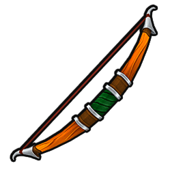
Arc du vent sylvestre
+4 attaque, +2 mobilité
Éclaireur

Couteau de voyage
+1 attaque
Guerrier · Éclaireur · Mage

Couteaux de lancer équilibrés
+2 attaque
Guerrier · Éclaireur
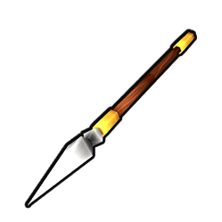
Javelots du garde-frontière
+2 attaque, +1 défense
Guerrier · Éclaireur

Hachettes du berserker
+4 attaque, -1 défense
Guerrier

Lames de brume
+3 attaque, +1 mobilité
Éclaireur

Bâton d’apprenti
+1 attaque, +1 défense
Mage
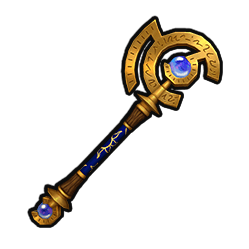
Bâton de braise
+3 attaque
Mage
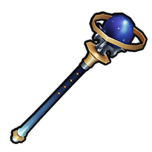
Bâton du gardien
+2 défense, +5 santé maximale
Mage
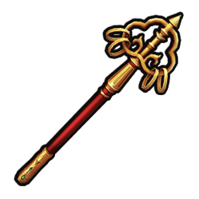
Bâton du rassemblement
+2 commandement, +1 moral
Mage

Bâton de l’archimage
+3 attaque, +2 défense, +1 commandement
Mage

Rondache du voyageur
+1 défense, +1 mobilité
Guerrier · Éclaireur
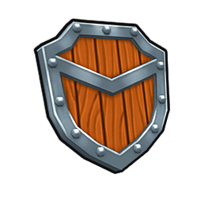
Écu du sergent
+2 défense, +1 commandement
Guerrier

Pavois renforcé
+4 défense, -1 mobilité
Guerrier

Bouclier du serment
+3 défense, +1 moral
Guerrier

Grimoire d’initiation
+1 attaque
Mage
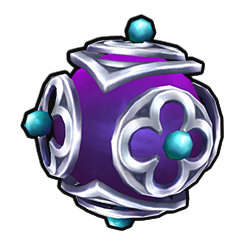
Cube de protection
+2 défense
Mage
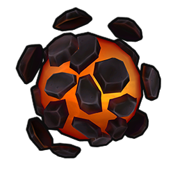
Pierre de vitalité
+5 santé maximale, +1 moral
Mage

Livre des voix unies
+2 commandement
Mage
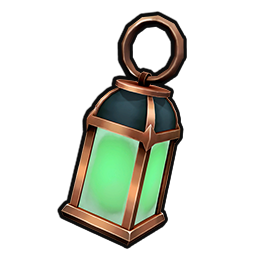
Lanterne astrale
+1 attaque, +1 défense, +1 mobilité
Mage
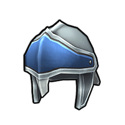
Casque de milicien
+1 défense
Guerrier · Éclaireur

Cervelière renforcée
+2 défense
Guerrier · Éclaireur
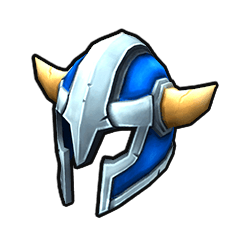
Heaume du vétéran
+2 défense, +1 moral
Guerrier

Casque du capitaine
+1 défense, +2 commandement
Guerrier

Heaume du dernier rempart
+3 défense, +5 santé maximale, -1 mobilité
Guerrier

Bonnet de voyage
+1 moral
Guerrier · Éclaireur · Mage

Chapeau runique
+1 attaque, +1 défense
Mage

Capuche des sentiers secrets
+2 mobilité
Éclaireur
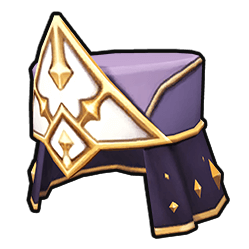
Coiffe du sage
+2 commandement, +1 moral
Mage
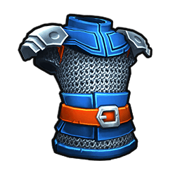
Cotte de mailles
+3 défense, -1 mobilité
Guerrier

Brigandine de guerre
+2 défense, +5 santé maximale
Guerrier

Cuirasse du capitaine
+3 défense, +1 commandement, -1 mobilité
Guerrier
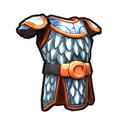
Harnois du vétéran
+4 défense, +1 moral, -1 mobilité
Guerrier
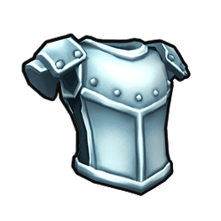
Armure de la citadelle
+5 défense, +10 santé maximale, -2 mobilité
Guerrier
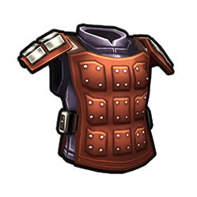
Gambison de voyage
+1 défense, +5 santé maximale
Guerrier · Éclaireur · Mage
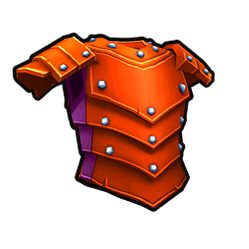
Cuir clouté
+2 défense
Guerrier · Éclaireur
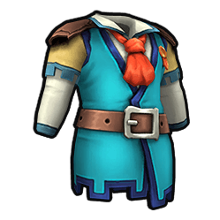
Veste du pisteur
+1 défense, +2 mobilité
Éclaireur
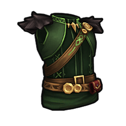
Armure de la feuille d’acier
+3 défense, +1 mobilité
Éclaireur

Robe d’apprenti
+1 défense
Mage

Robe du cercle protecteur
+2 défense, +5 santé maximale
Mage

Robe des braises
+2 attaque, +1 défense
Mage

Robe du seigneur
+2 commandement, +1 moral
Mage
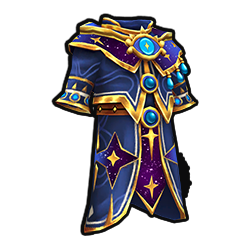
Robe du firmament
+2 attaque, +2 défense, +5 santé maximale
Mage
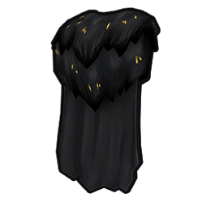
Manteau de voyage
+5 santé maximale
Guerrier · Éclaireur · Mage
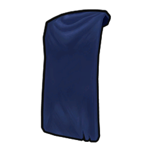
Cape du messager
+1 mobilité, +1 moral
Guerrier · Éclaireur · Mage

Manteau de commandement
+2 commandement
Guerrier
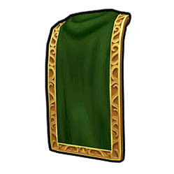
Cape des sous-bois
+2 mobilité
Éclaireur
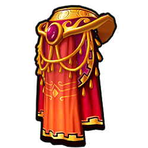
Manteau des constellations
+1 attaque, +1 défense, +1 moral
Mage
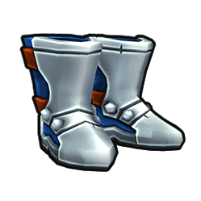
Bottes ferrées
+1 défense, +1 mobilité
Guerrier

Bottes du traqueur
+2 mobilité, +1 attaque
Éclaireur

Bottes du pèlerin
+1 mobilité, +5 santé maximale
Guerrier · Éclaireur · Mage

Bottes du passage astral
+2 mobilité, +1 défense
Mage

Anneau de fer
+1 défense
Guerrier · Éclaireur · Mage

Anneau de vigueur
+5 santé maximale
Guerrier · Éclaireur · Mage

Anneau du duelliste
+2 attaque
Guerrier · Éclaireur

Anneau du conclave
+1 attaque, +1 commandement
Mage
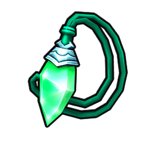
Pendentif de vitalité
+5 santé maximale
Guerrier · Éclaireur · Mage

Torque du conquérant
+2 attaque, +1 commandement
Guerrier
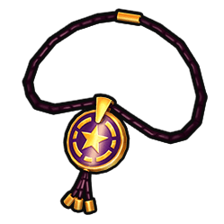
Collier des chemins oubliés
+2 mobilité, +1 moral
Éclaireur

Médaillon de l’équilibre
+1 attaque, +1 défense, +1 commandement
Mage